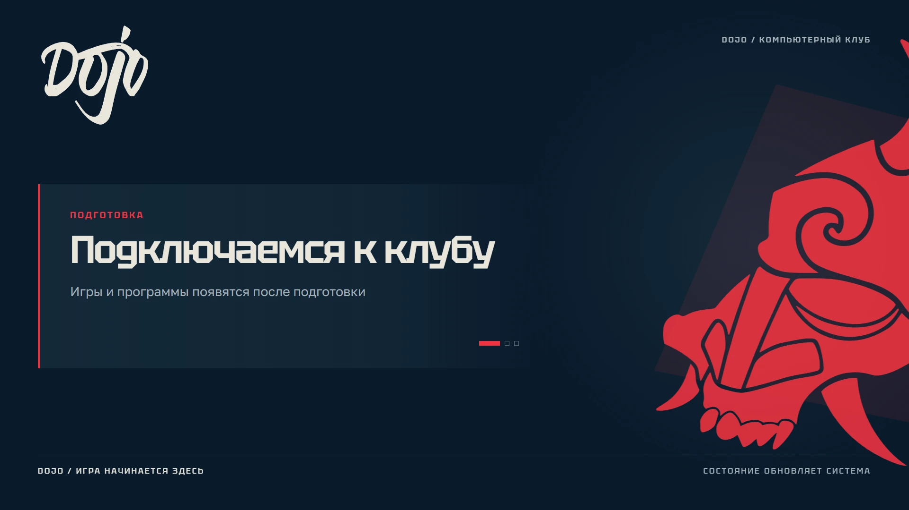
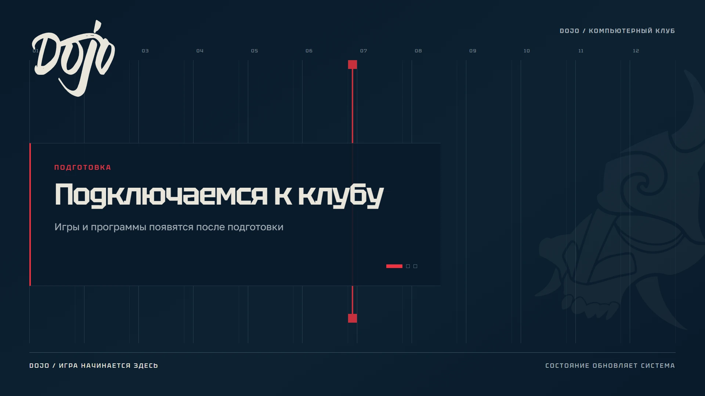
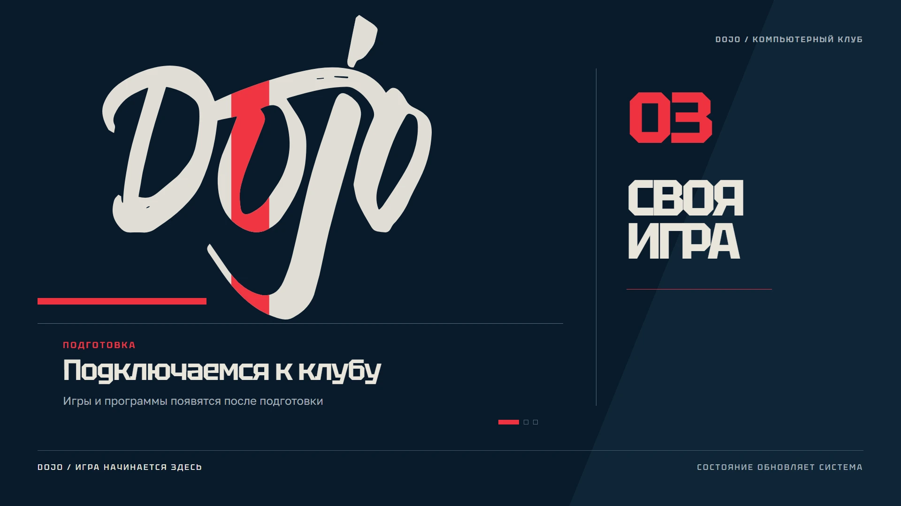
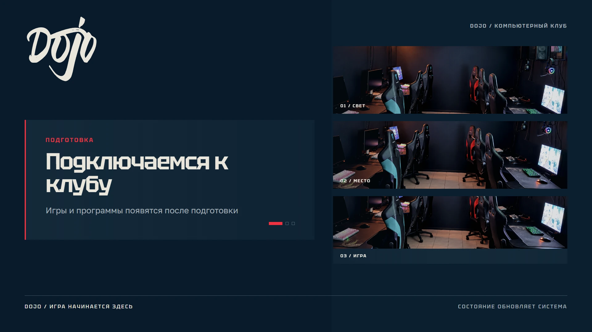

01 / Вывеска
Одно имя и один контраст
Без второго слогана и лишней рамки
DOJO / ПОЗИЦИОНИРОВАНИЕ
Компьютерный клуб для тех, кто приходит
за своей игрой и людьми рядом
Узнаваемый образ
Реальная среда
Понятное действие
Сосредоточиться на игре
и выбрать подходящее место
Собраться ради матча,
разговора и общего вечера
Вернуться в клуб,
который узнаешь по характеру
Японский киберпанк в образе, реальные люди в коммуникации
и спокойный интерфейс с честными данными
Исходный знак и цельная графика
Фотографии своего клуба
Уважительный, прямой разговор
Случайные иероглифы и неон повсюду
Универсальный рендер вместо места
Элитарность и обещания без основания
DOJO / СОЦСЕТИ
Собственные мастер-шаблоны DOJO
Кроп и интерфейс площадки проверяем перед публикацией
Компактный знак без подписи
Знак занимает до 64% квадрата
Круг — проверка обрезки, не новый логотип
Мастер DOJO 1600 × 640 / 8 колонок
Мастер DOJO 1600 × 900 / пост или закреп
1080 × 1350
6 колонок / поле 8%
1080 × 1920
4 колонки / боковое поле 8%
DOJO / НАРУЖКА И ИНТЕРЬЕР
Четыре эскиза на реальных фотографиях клуба
Наложения показывают систему, а не выполненный монтаж
Одно имя и один контраст
Без второго слогана и лишней рамки
Красный знак и понятное направление
Плоскость стекла и размеры — по месту
Название читается раньше декора
Направления сверяются с планом клуба
Короткая фраза на уровне взгляда
Прайс и наличие живут отдельно
Исходный знак, Tektur,
крупные поля, один акцент
Пленка, печать и подсветка
проверяются на месте
Сначала читаемость из зала,
затем технические размеры
DOJO / МОУШН
Четыре работающих варианта экрана ожидания
Ни процент, ни готовность не появляются по таймеру

Сдвиг 3–4 px, масштаб до 0,4%
Блик остается внутри исходного знака

Сигнал 4 px идет по сетке и возвращается
Это ритм, а не заполняющаяся шкала

Один короткий проход каждые 8 с
Остальное время — пауза

Три окна раскрываются один раз
Дальше фотография смещается до 6 px
Номер ПК, баланс и готовность
не запекаются в заставку
Полный статичный кадр
без блика, среза и параллакса
Анимация останавливается
при скрытой вкладке и игре
Реальные стоп-кадры из motion-waiting / исходники HTML, CSS и JS в комплекте
DOJO / МЕРЧ И ПРЕДМЕТЫ
Носитель меняется — геометрия знака остается
Один цвет нанесения / фирменный красный
Один цвет / красный
Крупный знак на одной стороне
Один цвет / красный
Рабочий центр оставляем спокойным
Один цвет / красный
Читаемость проверяем в размере
Сохраняем уже собранные
файлы и общие поля
Это плоские эскизы, не готовые лекала
Размеры, материал, вылеты и толщины согласуем с подрядчиком после пробника
Мастер-файлы знака берем из brand/assets без перерисовки
DOJO / ПРАВА И КОНТАКТЫ
Брендбук фиксирует происхождение и приложенные условия
Он не выдает единую лицензию на все изображения
Предоставленные исходники и технические варианты
Публичное применение — в рамках согласования владельца бренда
Кистевой растровый образец не заменяет мастер для производства
SIL Open Font License 1.1
Полные тексты OFL включены в поставку вместе со шрифтами
Условия Vic Fieger, это не OFL
В комплекте — запись условий автора в LICENSING.txt
Файл шрифта не продается как самостоятельный товар
Сгенерированные образы отделены от фото гостей и арта издателей
Для фото клуба сохранены источники и история обработки
Само наличие файла не подтверждает все права на публикацию
Сток по лицензии Pexels, не документальное фото DOJO
Не приписываем людям одобрение клуба и не распространяем
оригинал как отдельную библиотеку стока
Персонажи, логотипы и упаковки остаются у правообладателей
В комплекте они идентифицируют каталог клуба
Отдельные разрешения на внешние кампании не приложены
SmartShell и SmartGamer — места применения
Знак DOJO в их интерфейсе не означает
партнерство или одобрение SmartShell
Сторонний арт, упаковки и фотографии людей
проверяются под конкретное использование
Запрос согласования не равен разрешению
Основание: LICENSE-AUDIT от 30 сентября 2026 / Pexels проверен 1 октября 2026